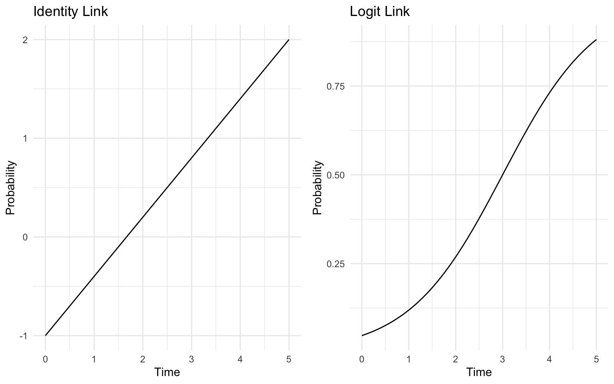
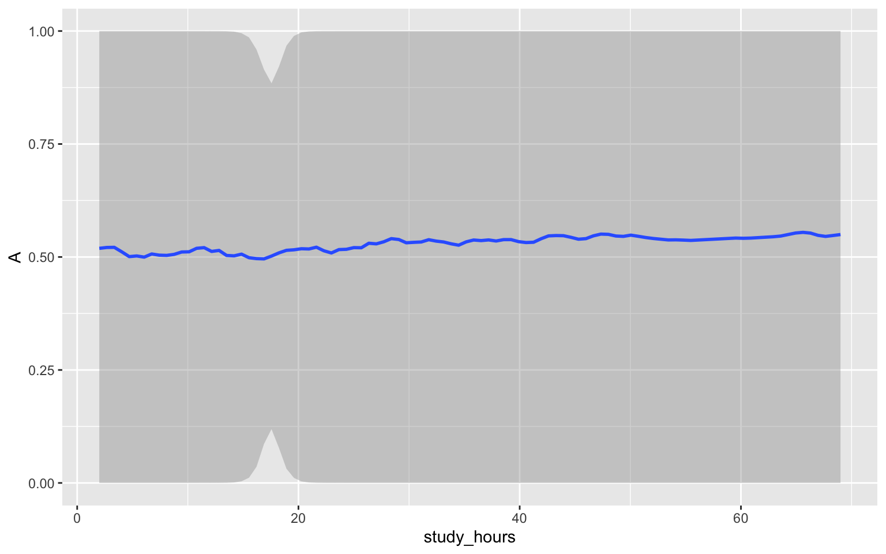
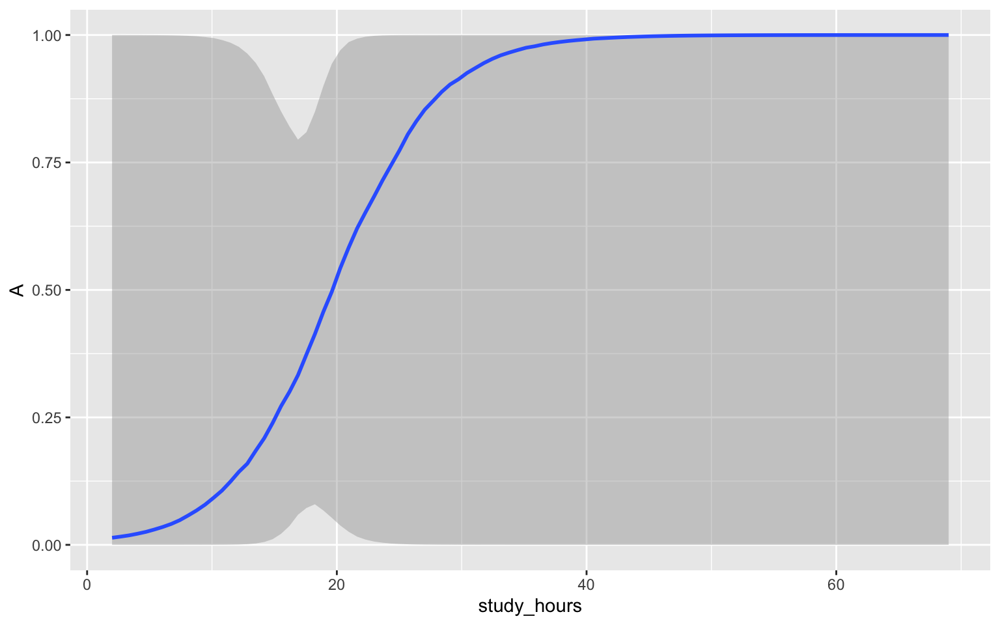
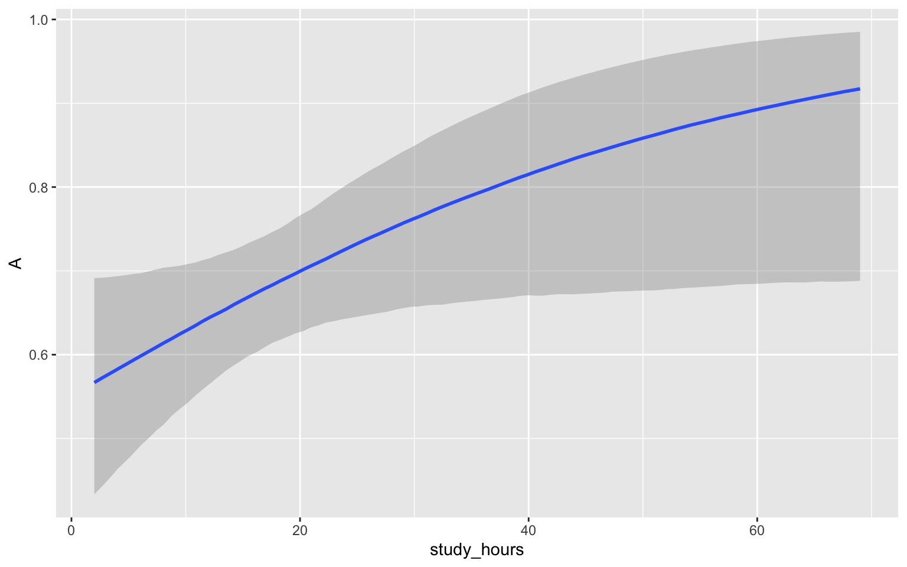

April 1, 2026
In previous labs, we focused on linear regression models where the outcome was continuous and normally distributed.
Today, we transition to Generalized Linear Models (GLMs):
Generalization: We use non-normal data distributions and link functions rather than the normal distribution and identity link.
Prior Specification: The use of link functions changes how we approach prior predictive simulations.
Interpretation: Instead of interpreting direct changes in \(Y\), the parameters are now on a transformed scale, such as log-odds.
Previously, we considered the relationship between GPA and study time.
\[\begin{align*} GPA_i & \sim \text{Normal}(\mu_i, \sigma) \\ \mu_i & = \alpha + \beta \times \text{time}_i \end{align*}\]
In brms, we specified this model using family = gaussian(link = "identity").
What if instead of predicting GPA itself, we wanted to model the probability of earning an “A” average or better (GPA > 3.5)?
A normal distribution is no longer appropriate. Instead, we can use the Bernoulli distribution to describe the distribution of the data.
Parameter \(p\) represents the probability of success.
The logit function relates \(p\) to our predictor variable(s).
\[\begin{align*} \text{A}_i & \sim \text{Bernoulli}(p_i) \\ \text{logit}(p_i) & = \alpha + \beta \times \text{time}_i \end{align*}\]
Notice the y-axes!

If we used an identity link (\(p = \alpha + \beta \times \text{time}\)), the model might predict probabilities below 0 or above 1. The logit function maps the linear predictor to a valid 0–1 range.
Intercept (\(\alpha\)): plogis(a) provides the probability of a pass when study time is zero.
Slope (\(\beta\)): The sign of \(b\) controls whether the relationship between time and the probability is positive or negative.
Because the link function makes the relationship between parameters and the outcome non-linear, prior predictive simulation is essential for determining if our priors are reasonable.
We will use the gpa_study_hours.csv dataset where GPA \(\ge\) 3.5 is coded as 1 (“A”) and GPA < 3.5 is 0.
In brms, logistic regression is specified with family = bernoulli(link = "logit")
get_prior to see how to input priorsLet’s start our simulations with a \(N(0, 1)\) prior on both \(a\) and \(b\).
For GLMS, method = "posterior_epred" plots results on the transformed “probability” scale.

This doesn’t make sense!
We would expect an increase in study hours to *increase the probability of an A \(\rightarrow\) let’s increase the mean of the prior on \(b\) to .25 and decrease the standard deviation to .5.
The intercept corresponds to the probability of an A with zero hours of study, this should be lower than logit(0) = 0.5 \(\rightarrow\) let’s decrease the mean of the prior on \(a\) to -.5.
Running /Library/Frameworks/R.framework/Resources/bin/R \
CMD SHLIB foo.c
using C compiler: ‘Apple clang version 17.0.0 (clang-1700.6.3.2)’
using SDK: ‘MacOSX26.2.sdk’
clang -arch arm64 -std=gnu2x -I"/Library/Frameworks/R.framework/Resources/include" -DNDEBUG -I"/Library/Frameworks/R.framework/Versions/4.5-arm64/Resources/library/Rcpp/include/" -I"/Library/Frameworks/R.framework/Versions/4.5-arm64/Resources/library/RcppEigen/include/" -I"/Library/Frameworks/R.framework/Versions/4.5-arm64/Resources/library/RcppEigen/include/unsupported" -I"/Library/Frameworks/R.framework/Versions/4.5-arm64/Resources/library/BH/include" -I"/Library/Frameworks/R.framework/Versions/4.5-arm64/Resources/library/StanHeaders/include/src/" -I"/Library/Frameworks/R.framework/Versions/4.5-arm64/Resources/library/StanHeaders/include/" -I"/Library/Frameworks/R.framework/Versions/4.5-arm64/Resources/library/RcppParallel/include/" -I"/Library/Frameworks/R.framework/Versions/4.5-arm64/Resources/library/rstan/include" -DEIGEN_NO_DEBUG -DBOOST_DISABLE_ASSERTS -DBOOST_PENDING_INTEGER_LOG2_HPP -DSTAN_THREADS -DUSE_STANC3 -DSTRICT_R_HEADERS -DBOOST_PHOENIX_NO_VARIADIC_EXPRESSION -D_HAS_AUTO_PTR_ETC=0 -include '/Library/Frameworks/R.framework/Versions/4.5-arm64/Resources/library/StanHeaders/include/stan/math/prim/fun/Eigen.hpp' -D_REENTRANT -DRCPP_PARALLEL_USE_TBB=1 -I/opt/R/arm64/include -fPIC -falign-functions=64 -Wall -g -O2 -c foo.c -o foo.o
In file included from <built-in>:1:
In file included from /Library/Frameworks/R.framework/Versions/4.5-arm64/Resources/library/StanHeaders/include/stan/math/prim/fun/Eigen.hpp:22:
In file included from /Library/Frameworks/R.framework/Versions/4.5-arm64/Resources/library/RcppEigen/include/Eigen/Dense:1:
In file included from /Library/Frameworks/R.framework/Versions/4.5-arm64/Resources/library/RcppEigen/include/Eigen/Core:19:
/Library/Frameworks/R.framework/Versions/4.5-arm64/Resources/library/RcppEigen/include/Eigen/src/Core/util/Macros.h:679:10: fatal error: 'cmath' file not found
679 | #include <cmath>
| ^~~~~~~
1 error generated.
make: *** [foo.o] Error 1
SAMPLING FOR MODEL 'anon_model' NOW (CHAIN 1).
Chain 1:
Chain 1: Gradient evaluation took 2e-05 seconds
Chain 1: 1000 transitions using 10 leapfrog steps per transition would take 0.2 seconds.
Chain 1: Adjust your expectations accordingly!
Chain 1:
Chain 1:
Chain 1: Iteration: 1 / 2000 [ 0%] (Warmup)
Chain 1: Iteration: 200 / 2000 [ 10%] (Warmup)
Chain 1: Iteration: 400 / 2000 [ 20%] (Warmup)
Chain 1: Iteration: 600 / 2000 [ 30%] (Warmup)
Chain 1: Iteration: 800 / 2000 [ 40%] (Warmup)
Chain 1: Iteration: 1000 / 2000 [ 50%] (Warmup)
Chain 1: Iteration: 1001 / 2000 [ 50%] (Sampling)
Chain 1: Iteration: 1200 / 2000 [ 60%] (Sampling)
Chain 1: Iteration: 1400 / 2000 [ 70%] (Sampling)
Chain 1: Iteration: 1600 / 2000 [ 80%] (Sampling)
Chain 1: Iteration: 1800 / 2000 [ 90%] (Sampling)
Chain 1: Iteration: 2000 / 2000 [100%] (Sampling)
Chain 1:
Chain 1: Elapsed Time: 0.004 seconds (Warm-up)
Chain 1: 0.004 seconds (Sampling)
Chain 1: 0.008 seconds (Total)
Chain 1:
SAMPLING FOR MODEL 'anon_model' NOW (CHAIN 2).
Chain 2:
Chain 2: Gradient evaluation took 0 seconds
Chain 2: 1000 transitions using 10 leapfrog steps per transition would take 0 seconds.
Chain 2: Adjust your expectations accordingly!
Chain 2:
Chain 2:
Chain 2: Iteration: 1 / 2000 [ 0%] (Warmup)
Chain 2: Iteration: 200 / 2000 [ 10%] (Warmup)
Chain 2: Iteration: 400 / 2000 [ 20%] (Warmup)
Chain 2: Iteration: 600 / 2000 [ 30%] (Warmup)
Chain 2: Iteration: 800 / 2000 [ 40%] (Warmup)
Chain 2: Iteration: 1000 / 2000 [ 50%] (Warmup)
Chain 2: Iteration: 1001 / 2000 [ 50%] (Sampling)
Chain 2: Iteration: 1200 / 2000 [ 60%] (Sampling)
Chain 2: Iteration: 1400 / 2000 [ 70%] (Sampling)
Chain 2: Iteration: 1600 / 2000 [ 80%] (Sampling)
Chain 2: Iteration: 1800 / 2000 [ 90%] (Sampling)
Chain 2: Iteration: 2000 / 2000 [100%] (Sampling)
Chain 2:
Chain 2: Elapsed Time: 0.004 seconds (Warm-up)
Chain 2: 0.004 seconds (Sampling)
Chain 2: 0.008 seconds (Total)
Chain 2:
SAMPLING FOR MODEL 'anon_model' NOW (CHAIN 3).
Chain 3:
Chain 3: Gradient evaluation took 0 seconds
Chain 3: 1000 transitions using 10 leapfrog steps per transition would take 0 seconds.
Chain 3: Adjust your expectations accordingly!
Chain 3:
Chain 3:
Chain 3: Iteration: 1 / 2000 [ 0%] (Warmup)
Chain 3: Iteration: 200 / 2000 [ 10%] (Warmup)
Chain 3: Iteration: 400 / 2000 [ 20%] (Warmup)
Chain 3: Iteration: 600 / 2000 [ 30%] (Warmup)
Chain 3: Iteration: 800 / 2000 [ 40%] (Warmup)
Chain 3: Iteration: 1000 / 2000 [ 50%] (Warmup)
Chain 3: Iteration: 1001 / 2000 [ 50%] (Sampling)
Chain 3: Iteration: 1200 / 2000 [ 60%] (Sampling)
Chain 3: Iteration: 1400 / 2000 [ 70%] (Sampling)
Chain 3: Iteration: 1600 / 2000 [ 80%] (Sampling)
Chain 3: Iteration: 1800 / 2000 [ 90%] (Sampling)
Chain 3: Iteration: 2000 / 2000 [100%] (Sampling)
Chain 3:
Chain 3: Elapsed Time: 0.004 seconds (Warm-up)
Chain 3: 0.004 seconds (Sampling)
Chain 3: 0.008 seconds (Total)
Chain 3:
SAMPLING FOR MODEL 'anon_model' NOW (CHAIN 4).
Chain 4:
Chain 4: Gradient evaluation took 0 seconds
Chain 4: 1000 transitions using 10 leapfrog steps per transition would take 0 seconds.
Chain 4: Adjust your expectations accordingly!
Chain 4:
Chain 4:
Chain 4: Iteration: 1 / 2000 [ 0%] (Warmup)
Chain 4: Iteration: 200 / 2000 [ 10%] (Warmup)
Chain 4: Iteration: 400 / 2000 [ 20%] (Warmup)
Chain 4: Iteration: 600 / 2000 [ 30%] (Warmup)
Chain 4: Iteration: 800 / 2000 [ 40%] (Warmup)
Chain 4: Iteration: 1000 / 2000 [ 50%] (Warmup)
Chain 4: Iteration: 1001 / 2000 [ 50%] (Sampling)
Chain 4: Iteration: 1200 / 2000 [ 60%] (Sampling)
Chain 4: Iteration: 1400 / 2000 [ 70%] (Sampling)
Chain 4: Iteration: 1600 / 2000 [ 80%] (Sampling)
Chain 4: Iteration: 1800 / 2000 [ 90%] (Sampling)
Chain 4: Iteration: 2000 / 2000 [100%] (Sampling)
Chain 4:
Chain 4: Elapsed Time: 0.004 seconds (Warm-up)
Chain 4: 0.004 seconds (Sampling)
Chain 4: 0.008 seconds (Total)
Chain 4: Good enough?

We were wrong about the prior for the intercept. Grade inflation at work!
Family: bernoulli
Links: mu = logit
Formula: A ~ study_hours
Data: dat (Number of observations: 192)
Draws: 4 chains, each with iter = 2000; warmup = 1000; thin = 1;
total post-warmup draws = 4000
Regression Coefficients:
Estimate Est.Error l-95% CI u-95% CI Rhat
Intercept 0.20 0.30 -0.39 0.79 1.00
study_hours 0.03 0.02 0.00 0.06 1.00
Bulk_ESS Tail_ESS
Intercept 3636 2576
study_hours 3092 2262
Draws were sampled using sampling(NUTS). For each parameter, Bulk_ESS
and Tail_ESS are effective sample size measures, and Rhat is the potential
scale reduction factor on split chains (at convergence, Rhat = 1).
Remember that the binomial distribution is a generalization of the bernoulli distribution
brm(outcome ~ predictors, family = bernoulli(link = "logit"))Binomial is the count of binary successes, each with probability \(p\)
nsuccesses is the total number of successesntrials is the total number of trials (potential successes), must be greater than the number of successestrials() is special syntax in brms, not a variable in your databrm(nsuccesses | trials(ntrials) ~ predictors, family = binomial(link = "logit"))In lecture, we looked at time 1 injuries by sport type (individual vs. team). Let’s repeat this analysis for time 2.
For this model, we want to treat both sport and type as index variables.
prior class coef group resp dpar nlpar lb ub
(flat) b a
(flat) b sportathletics a
(flat) b sportbasketball a
(flat) b sportcricket a
(flat) b sportfootball a
(flat) b sportgym a
(flat) b sporthockey a
(flat) b sportnetball a
(flat) b sportother a
(flat) b sportrugby a
(flat) b b
(flat) b typeIndividual b
(flat) b typeTeam b
tag source
default
(vectorized)
(vectorized)
(vectorized)
(vectorized)
(vectorized)
(vectorized)
(vectorized)
(vectorized)
(vectorized)
default
(vectorized)
(vectorized)Use the priors we used in lecture:
Family: binomial
Links: mu = logit
Formula: ninj | trials(n) ~ a + b
a ~ 0 + sport
b ~ 0 + type
Data: d_binomial (Number of observations: 9)
Draws: 4 chains, each with iter = 2000; warmup = 1000; thin = 1;
total post-warmup draws = 4000
Regression Coefficients:
Estimate Est.Error l-95% CI u-95% CI Rhat
a_sportathletics -0.70 0.62 -1.89 0.48 1.00
a_sportbasketball -2.00 0.69 -3.38 -0.68 1.00
a_sportcricket -1.94 0.68 -3.32 -0.61 1.00
a_sportfootball -2.10 0.57 -3.20 -0.99 1.00
a_sportgym -2.01 0.82 -3.63 -0.48 1.00
a_sporthockey -1.70 0.59 -2.90 -0.57 1.00
a_sportnetball -3.12 0.73 -4.61 -1.74 1.00
a_sportother -3.01 0.71 -4.42 -1.62 1.00
a_sportrugby -1.08 0.50 -2.04 -0.06 1.00
b_typeIndividual 0.25 0.58 -0.89 1.38 1.00
b_typeTeam 0.06 0.43 -0.86 0.92 1.00
Bulk_ESS Tail_ESS
a_sportathletics 2410 2992
a_sportbasketball 3635 3187
a_sportcricket 3541 2951
a_sportfootball 3014 2968
a_sportgym 3942 3086
a_sporthockey 2891 2573
a_sportnetball 3969 3066
a_sportother 3295 3216
a_sportrugby 2486 2794
b_typeIndividual 2379 2589
b_typeTeam 2056 2600
Draws were sampled using sampling(NUTS). For each parameter, Bulk_ESS
and Tail_ESS are effective sample size measures, and Rhat is the potential
scale reduction factor on split chains (at convergence, Rhat = 1).Use the d_bernoulli data that we defined earlier family = bernoulli(link = "logit") approach to fit the same model that we just fit using the binomial link. Compare the numeric and visual output from the two models.
In lecture we also learned about multinomial logistic regression. Using the code shown in the lecture slides as a reference, use the (unaggregated) injury data to predict sport from any other variables in the data set (e.g., training hours, stiffness). As time allows, try to also conduct prior predictive simulation. What do you find?
For the conditional_effects() function, the arguments method = posterior_predict and method = posterior_linpred function differently than method = posterior_epred. Test out these other arguments for the models that we fit today. What information does each plot convey?